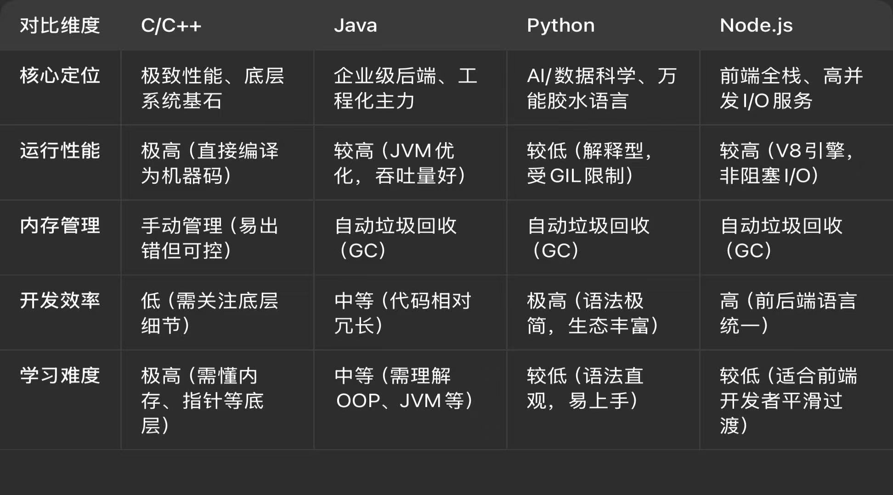
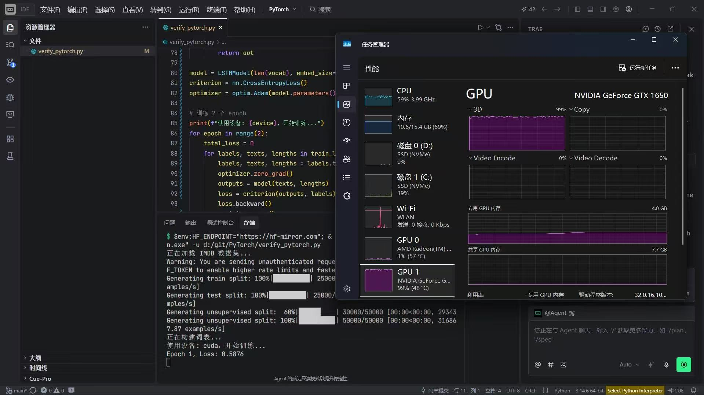
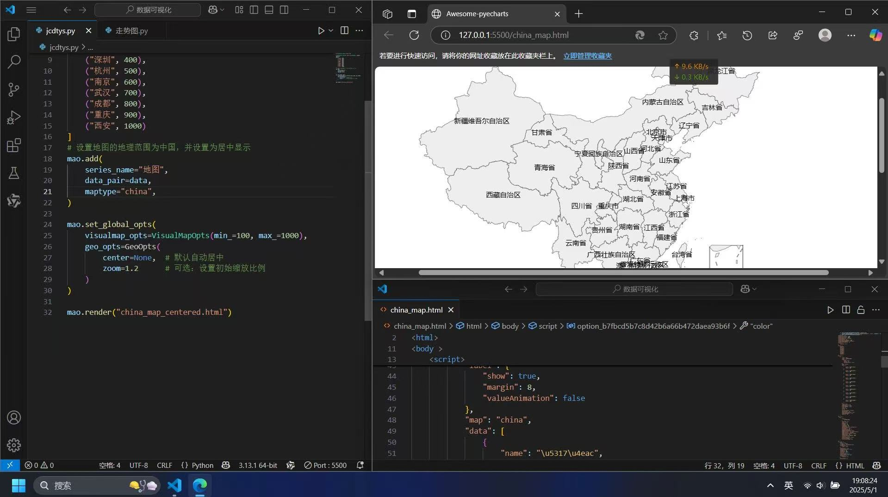
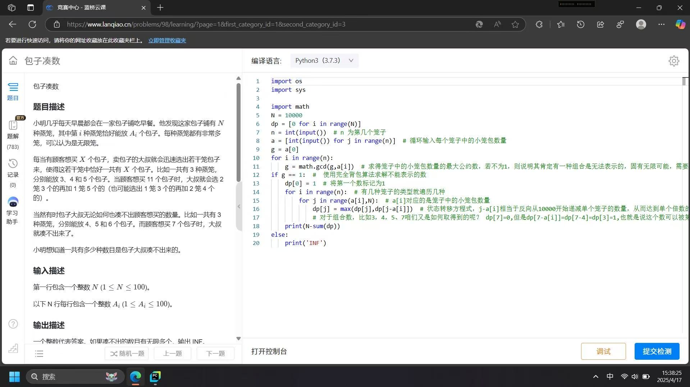
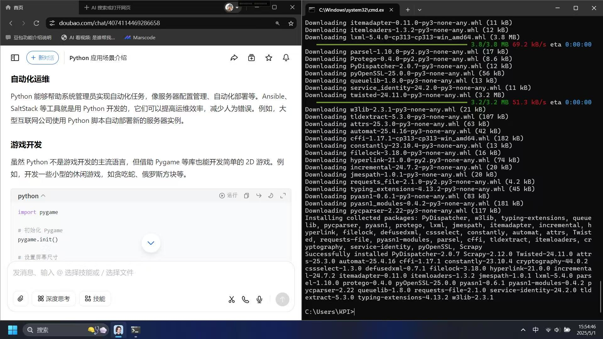

PyTorch、注意力机制、RAG、Agent、提示词工程、大模型架构原理
FastAPI、Node.js、Java、PostgreSQL、MySQL、Redis、接口设计
React、HTML5、CSS3、JavaScript、响应式布局、组件化开发
STM32、C语言、外设驱动、硬件通信、摄像头开发、底层调试
Git、Linux、Docker、数据库优化、SQL 注入防护、代码规范
Mac 系列芯片选型、Windows 驱动、Linux 系统、Android 底层

基于大模型搭建的离线 RAG 系统，支持本地文档上传、向量检索与智能问答，可在本地设备离线运行。
具备多工具调用能力的桌面智能体，可执行文件处理、信息查询、代码辅助等任务，支持插件扩展。
基于 STM32 的消防巡检机器人控制系统，集成多传感器数据采集与通信模块，稳定可靠。



